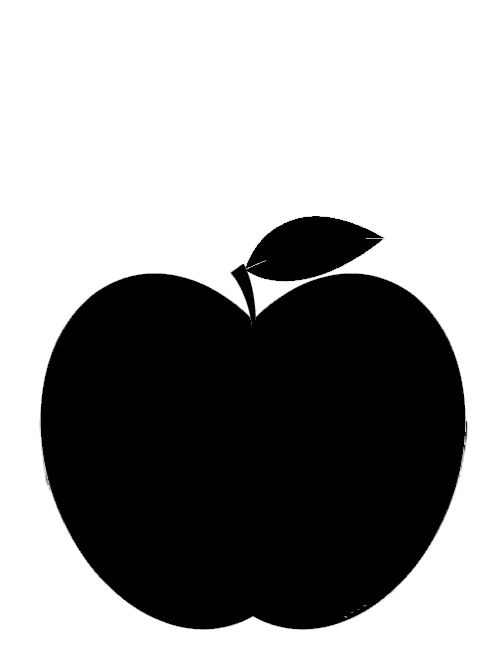

<!DOCTYPE html>
<html lang="ja">
<head>
    <title>timer</title>
    <meta charset="UTF-8">
    <link rel="icon" href="timelimitIcon.ico">
    <link rel="stylesheet" href="index.css">
    <link rel='stylesheet'  type='text/css' href='http://fonts.googleapis.com/css?family=Indie+Flower|Lobster' />
</head>
<body>
    <header>
        <p id="copyLight">©️kunishimaAtsushi</p><!--monacaではinnerText不要-->
        <h1>
            <span id="setUpDisp">〓</span>
            <span id="activeTaskName">タスク未設定</span>
            
        </h1>    
        <h2>
            <span id="timeText">00:00:00</span><span class="timeLimit">/<span id="timeLimit">00:00:00</span></span>
        </h2>
    </header>
    <div id="mainBody">    

        <div id="animetion" class="dispnon">
            
        </div>

        <div id="tasklistarea">
            <ul class="tasklist">
                <li id="insertLI">
                    <span id="singleAdd">
                        <input type="text" class="addtb" id="taskText" placeholder="※ダブルクリックで複数入力">
                    </span>
                    <span id="areaAdd" class="dispnon">
                        <textarea id="taskText2" placeholder="※改行ごとに入力します。入力後フォーカスを外してください。"></textarea><br />                    
                    </span>
                </li>   
            </ul>        
        </div>
        <!-- <button id="testbutton">testbutton</button> -->
    </div>

    <!-- <hr /> -->

    <div id="setUp" class="startSetUphidden">
        <div id="select">
            アニメーション
            <select name="an" id="selectAnime">
                <option value="newton" selected>ニュートン</option>
                <option value="darwin">ダーウィン</option>
                <option value="none" >アニメーションなし</option>                
            </select><br />
            Hour
            <select name="hour" id="hour">
                <option value="0">0</option>
                <option value="1">1</option>
                <option value="2">2</option>
                <option value="3">3</option>
            </select><br />
            Minutes
            <select name="min" id="min">
                <option value="0">0</option>
                <option value="5" selected>5</option>
                <!-- <option value="5">5</option> -->
                <option value="10">10</option>
                <option value="15">15</option>
                <option value="20">20</option>
                <option value="25">25</option>
                <option value="30">30</option>
                <option value="35">35</option>
                <option value="40">40</option>
                <option value="45">45</option>
                <option value="50">50</option>
                <option value="55">55</option>
            </select><br />
            Second
            <select name="sec" id="sec">
                <option value="0">0</option>
                <!-- <option value="10" selected>10</option> -->
                <option value="10">10</option>
                <option value="20">20</option>
                <option value="30">30</option>
                <option value="40">40</option>
                <option value="50">50</option>
            </select>
            <span id="menuCheckBox">
                <label><input type="checkbox" id="checkLoop">繰り返しをしない</label>
            </span>
        </div>

        <div id="buttonSet">
                <span id="setUphidden" class="button1"><h2 id="settingSubmit">×</h2></span>
                <span id="delete_id"><h2 id="delText">Delete</h2></span>
            </div>
    </div>

    <span id="newton" class="dispnon"><!--dispnon-->
        
    </span>

</body>
<script src="index.js"></script>
</html>


